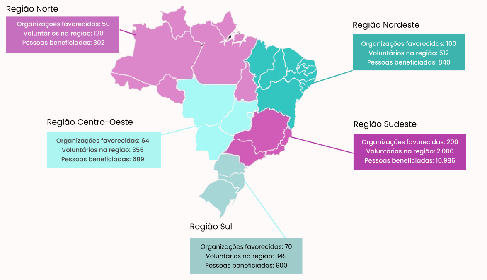

ENTRELAÇOS
Uma rede solidária que une pessoas dispostas a fazer a diferença, conectando voluntários, ONGs e doadores em prol de causas que transformam vidas..

Uma rede solidária que une pessoas dispostas a fazer a diferença, conectando voluntários, ONGs e doadores em prol de causas que transformam vidas..
Acreditamos no poder da colaboração para transformar o mundo.
O Entrelaços nasceu com a missão de unir pessoas, organizações e causas sociais em uma única plataforma — simples, acessível e feita para quem quer fazer a diferença.
Existimos para facilitar o encontro entre quem precisa de apoio e quem deseja ajudar, promovendo conexões verdadeiras, fortalecendo o trabalho das ONGs e inspirando o voluntariado consciente.
Mais do que uma plataforma, somos um elo de transformação.
Você já pensou em como pode impactar a vida de alguém? Seja com seu tempo, sua escuta ou seu talento... Cada gesto, por menor que pareça, pode fazer uma enorme diferença na jornada de outra pessoa. Mas você já se perguntou em qual causa o seu impacto pode ser ainda mais significativo? Descubra agora! Faça o nosso quiz e veja onde suas habilidades e seu coração solidário podem ser mais valiosos. Seu lugar na mudança começa aqui.
Causas Diversas
"Cada gesto de apoio é uma semente de esperança que floresce na vida de alguém."
Transforme suas compras em impacto social!
Cada produto adquirido ajuda a manter o Entrelaços e fortalece o trabalho de ONGs parceiras. Encontre itens com propósito, feitos com carinho e compromisso com a causa.

Camiseta Feminina
R$84.90
Camiseta Masculina
R$84.90
Chaveiro
R$14.90
Garrafa
R$49.90
Colar
R$49.90
Broche
R$9.90
Moletom Feminino
R$104.90
Sua doação faz diferença!
Ao contribuir com o Entrelaços, você está fortalecendo uma rede que conecta ONGs, voluntários e doadores em prol de causas sociais. Com sua ajuda, mantemos a plataforma ativa, segura e acessível — além de oferecer suporte direto às organizações que transformam vidas todos os dias
Cada doação nos permite:
Doe agora e ajude o Entrelaços a continuar conectando quem quer ajudar com quem precisa de ajuda.